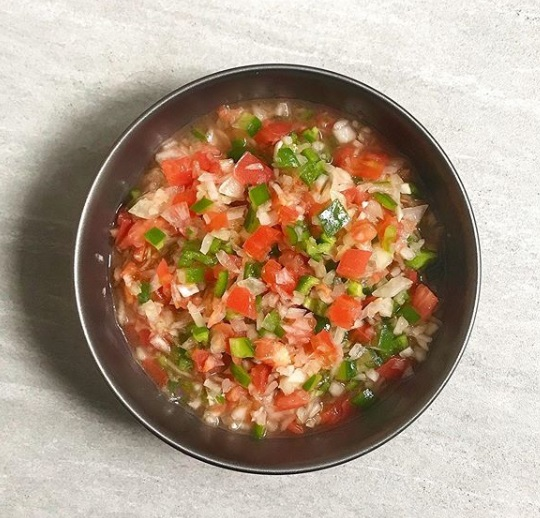

Vinagrete

INGREDIENTES (8 porções)
2 cebolas grandes cortadas em cubo
2 tomates sem semente e cortados em cubos
1/2 pimentão verde cortado em cubos
1/2 xícara (chá) de vinagre
1 xícara (chá) de azeitea
Sal a gosto
MODO DE PREPARO (1 min)
1° Em um recipiente com tampa misture todos os ingredientes